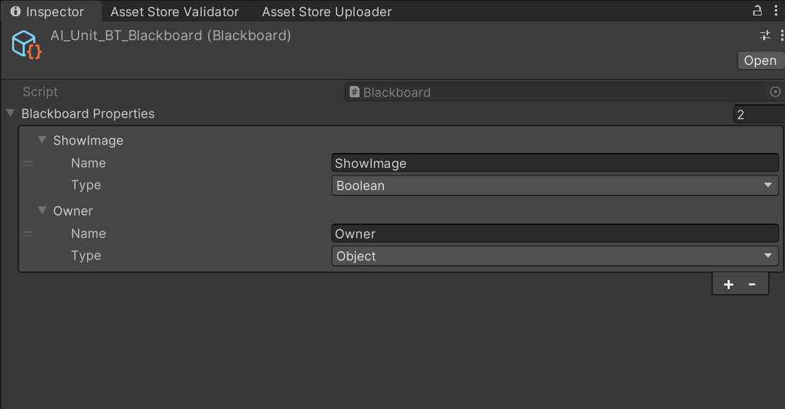
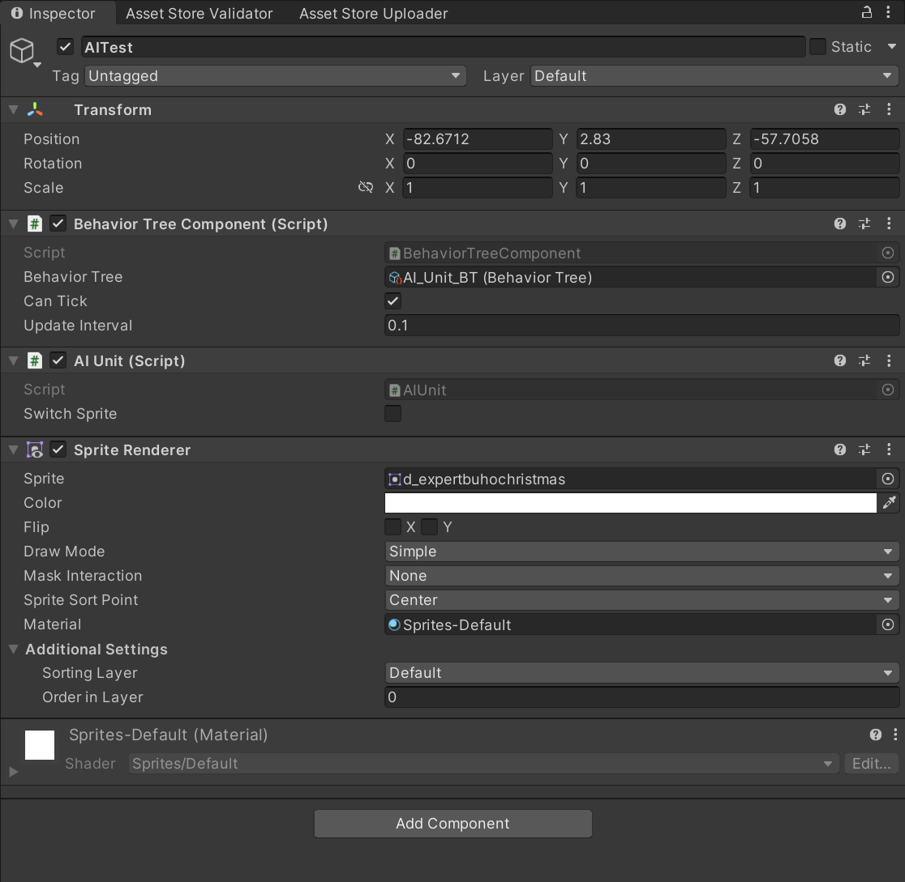

Behavior Tree quick tutorial
This tutorial will provide a really basic example on how to use the behavior tree.
In this case, we're gonna use the behavior tree to change the sprite of an AI unit placed inside the scene.
1. Setup the scene
Setup your current scene with an AIUnit game object and a camera relative to it.

2. Create assets
Create the Behavior Tree Asset
Create the following behavior tree:

Once you've created it, set one decorator to evaluate to true when a given blackboard key is false by changing the condition from Is Set To True to Is Set To False. In my case i did this to the decorator attached on the rightist sequence node.
Create a Blackboard Asset
The next step is to create a blackboard asset to store data for the behavior tree.
Create a blackboard asset with the following properties:

Once created, assign the blackboard asset to the behavior tree.
3. Create scripts
Create AI Controller script
Now we need to create the following AI Controller script:
using BT.Runtime;
using UnityEngine;
/// <summary>
/// A small script used just for testing out
/// behavior tree functionalities.
/// </summary>
public class AIUnit : MonoBehaviour
{
/// <summary>
/// Depending on if it is true or false, switch the sprite.
/// </summary>
public bool switchSprite;
// BT object references
private BehaviorTreeComponent behaviorTreeComponent;
private Blackboard blackboard;
private void Awake()
{
// Use the behavior tree component to access it's blackboard object reference.
behaviorTreeComponent = GetComponent<BehaviorTreeComponent>();
blackboard = behaviorTreeComponent.tree.blackboard;
// Set this component owner(gameObject) as the owner of the
// behavior tree. N.B. Owner it's just a property of the blackboard.
blackboard.SetBlackboardValue("Owner", gameObject);
}
// Update is called once per frame
void Update()
{
// Check on each update if the switchSprite property has changed,
// and keep updated the associated blackboard property.
blackboard.SetBlackboardValue("ShowImage", switchSprite);
}
}
All this script does is keeping track of a boolean property which decides what sprite should appear on screen. For more info look at code comments.
Create DisplaySprite action
Now we need a custom node which will be responsible for performing our task. Create a node called DisplaySprite as the following:
using BT.Runtime;
using UnityEngine;
public sealed class DisplaySprite : BT_ActionNode
{
/// <summary>
/// The sprite to display.
/// </summary>
public Sprite sprite;
/// <summary>
/// The sprite renderer used to render the target sprite.
/// </summary>
private SpriteRenderer spriteRenderer;
// Called when the behavior tree wants to execute this action.
protected override ENodeState Execute()
{
if (spriteRenderer != null)
{
spriteRenderer.sprite = sprite;
state = ENodeState.Success;
}
else
{
state = ENodeState.Failed;
}
return state;
}
// Called to initialize this action properties before first update.
protected override void OnInit()
{
GameObject obj = blackboard.GetBlackboardValueByKey<GameObject>("Owner");
spriteRenderer = obj.GetComponent<SpriteRenderer>();
}
// Called when the behavior tree starts executing this action
protected override void OnStart()
{
}
// Called when the behavior tree stops executing this action
protected override void OnStop()
{
}
// Put here editor only logic
#if UNITY_EDITOR
// for BT nodes the constructor is a editor only method, do not use it at runtime!
private void OnEnable()
{
description = "Change a sprite renderer sprite and display it";
}
#endif
}
all this action does is switching the sprite renderer sprite with the one assigned to this action. Read code comments for more info.
4. Attach MonoBehaviors to game object
Now attach the following components to our game object: SpriteRenderer, BehaviorTreeComponent and AIUnit

Once you've done it, assign our behavior tree asset to the component and you're good to go!à
5. Result
The result should be following:
You can also go inside the behavior tree editor during play mode to check realtime debugging of the tree: